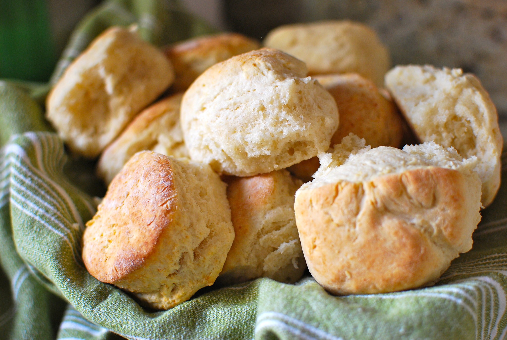

Yogurt Biscuits
This recipe is from food.com, by Aroostook, and can be found at https://www.food.com/recipe/yogurt-biscuits-26211

photo by: Christina B Castro, CC BY-NC-ND 2.0 https://creativecommons.org/licenses/by-nc-nd/2.0/,
via flickr
Ingredients
- 2 cups flour
- 2 teaspoons baking powder
- 5 tablespoons shortening
- 1/2 teaspoon salt
- 2/3 cup yogurt (Add just enough water to make the yogurt able to pour)
- 1 teaspoon melted shortening, to brush tops before cooking
Conversion
=
Rate this recipe
Directions
- Preheat oven to 425 degrees F.
- Grease an 8 x 8 pan.
- Stir dry ingredients together.
- Cut in shortening (I use an electric beater and use short bursts on low for about a minute).
- Gently stir in yogurt mixture until sticky dough is formed (do not overwork dough).
- Place dough on floured surface.
- Dust top with flour and gently pat dough with hands until 1/2 inch thick.
- Cut into 8-10 rounds.
- Place in pan.
- Brush with shortening.
- Bake 15 minutes.
- Turn out of pan 5 minutes after removing from oven.
- Cover with tea towel and serve.
return to main page